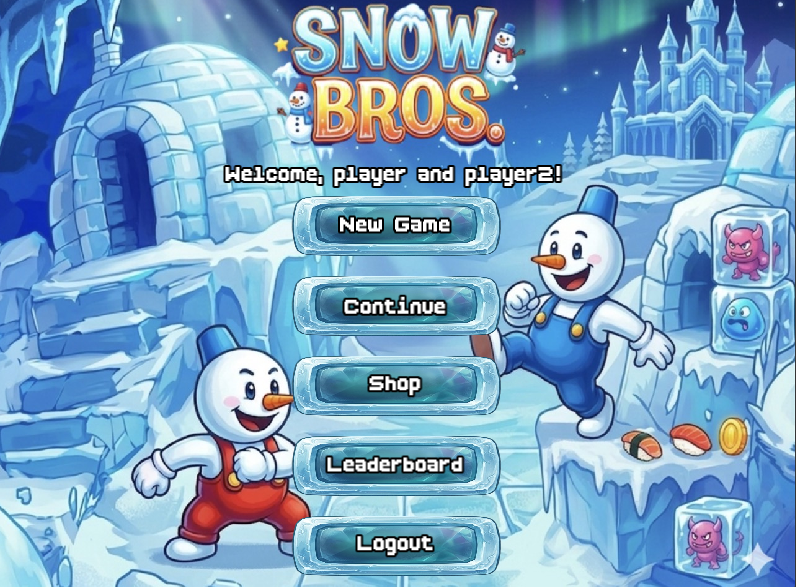
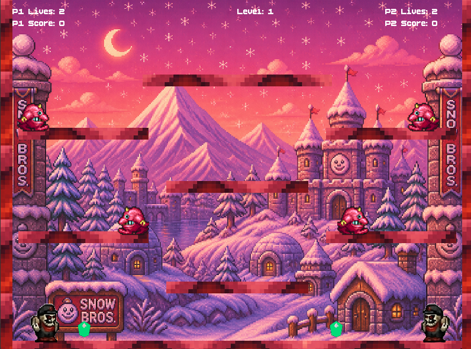
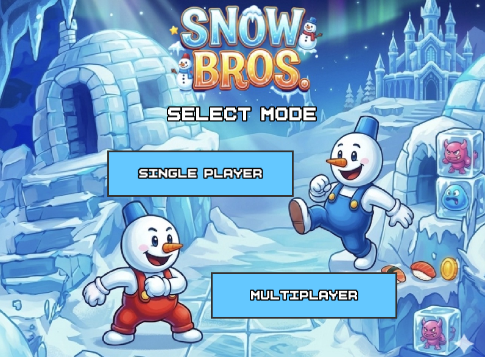
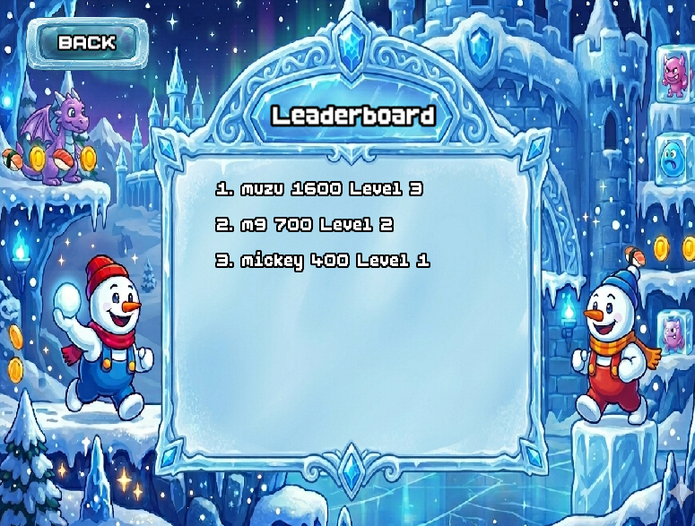
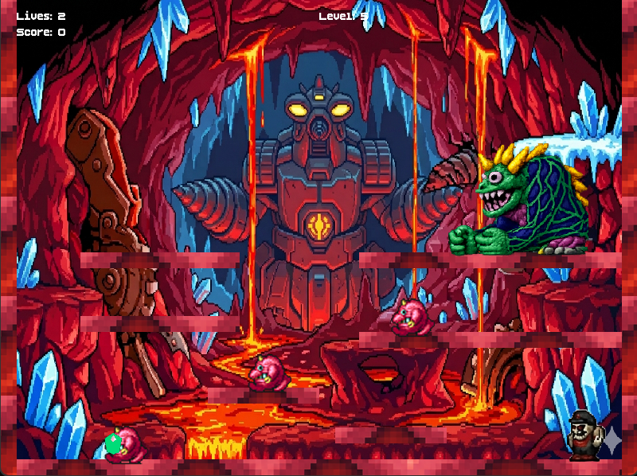
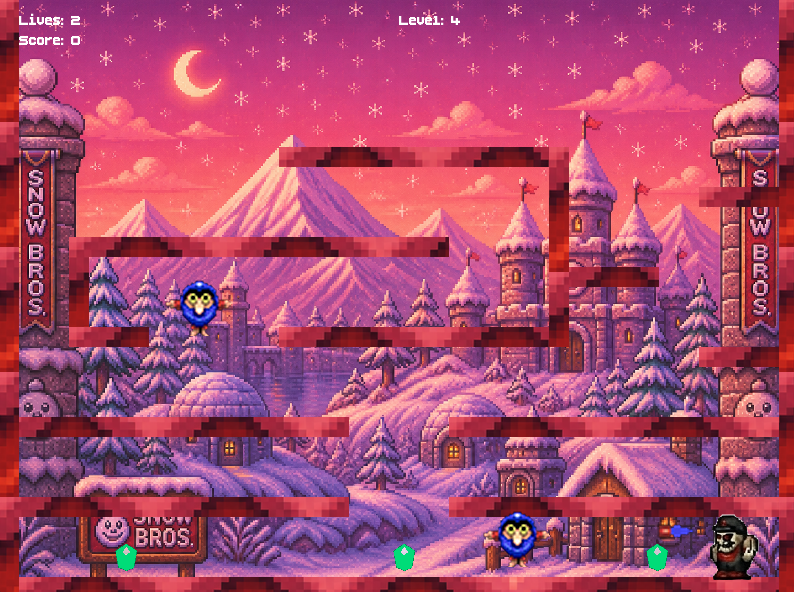

Snow Bros Remake is a C++ recreation of the classic 1990 arcade game, built using the SFML graphics library. The project was developed as an Object-Oriented Programming course project at FAST University.
The game features multiple enemy types, a shop system, a login and authentication system, a leaderboard, and a full UI state machine — all designed using OOP principles.